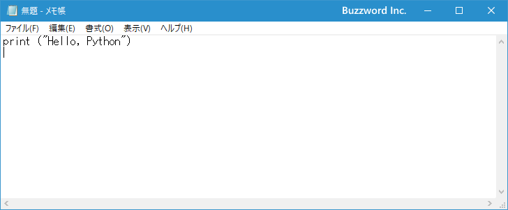
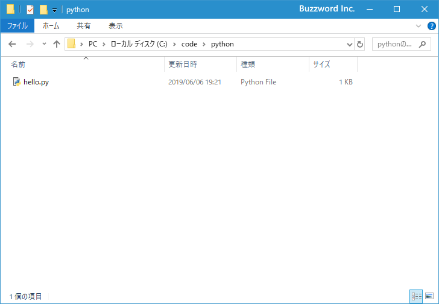
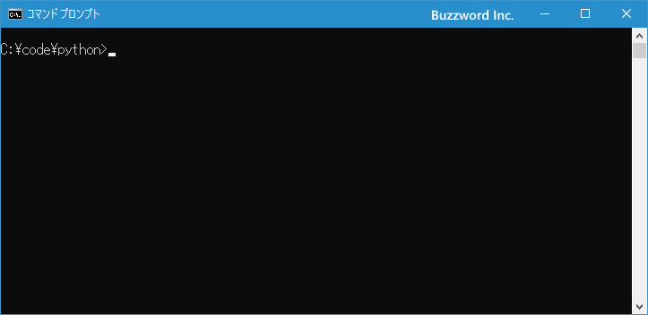
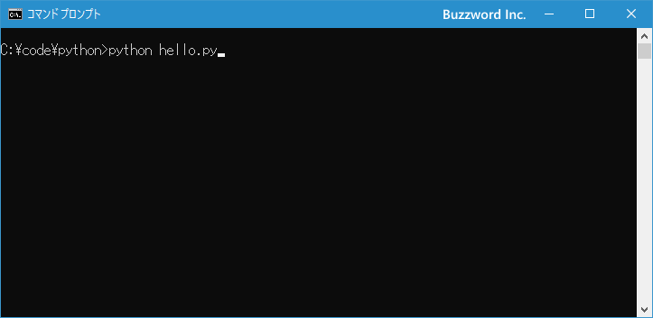
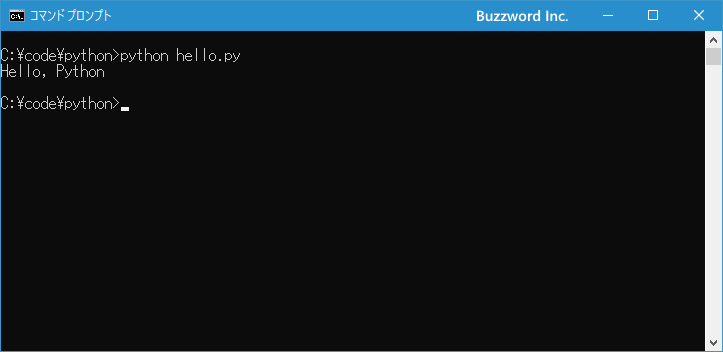

ファイルに記述したプログラムを実行する
Python ではあらかじめテキストファイルに保存しておいたプログラムを読み込んで実行させることができます。プログラムをファイルに保存しておけば繰り返し同じプログラムを実行することができ、また修正も簡単に行うことができます。ここではファイルに保存したプログラムを Python で実行する方法について解説します。
Pythonのプログラムをファイルに保存する
Python を使ってプログラムを記述する場合は、テキストファイルに記述します。エディタは何を使用しても構いませんけれど、 Python はデフォルトで文字コードとして UTF-8 で保存することになっているので、 UTF-8 が使用できるエディタを使用されてください。
2019年6月現在であれば、 Windows に付属しているメモ帳でも UTF-8 でファイルを保存することができます。
テキストエディタを起動したら Python のスクリプトを記述していきます。今回は例として次のように入力してください。
print ("Hello, Python")

それではファイルを保存します。先ほど記載したように文字コードは UTF-8 で保存してください。また Python のスクリプトが記述されたファイルは名前の部分は任意の名前でいいですが拡張子には .py を付けて保存します。
ファイル名.py
今回はファイル名として hello.py として保存しました。

ファイルに保存したプログラムを実行する
ファイルに保存したプログラムを実行するには、コマンドプロンプトを起動し実行するファイルが保存されているディレクトリへ移動してください。

ファイルに保存されたプログラムを Python で実行するには次のように実行します。
python ファイル名.py
今回はファイル名が hello.py なのでコマンドプロンプトから次のように実行します。
python hello.py

ファイルに記述されたスクリプトが順に実行されます。今回は 1 行だけのプログラムでしたが、プログラムが実行されて画面に Hello, Python と表示されました。

-- --
ファイルに保存したプログラムを Python で実行する方法について解説しました。
( Written by Tatsuo Ikura )

著者 / TATSUO IKURA
初心者～中級者の方を対象としたプログラミング方法や開発環境の構築の解説を行うサイトの運営を行っています。